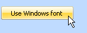

A font installed on your computer can be used in your game. Click on the Create font  button to bring up the system font dialog. Adjust the font to your liking and click Ok. The font will be converted to your SCI font.
Windows fonts are generally designed to look good at higher resolutions than what you see in SCI. So don't expect miracles here. Most likely, you will need to use the smallest font size possible, and make several adjustments afterwards in the editor.